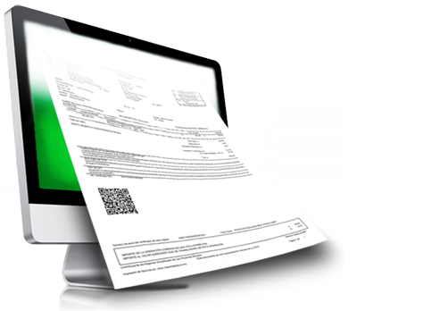

Contrate já nosso mini ERP para WEB com emissão de nota fiscal eletrônica NF-e.
Voltado para pequenas empresas optantes pelo simples nacional.
Pacotes a partir de R$ 49,90 mensais.
Para planos anuais, desconto de 15% para pagamento a vista.
Instalação, treinamento e suporte remoto.
Sem contrato de fidelidade para planos mensais.
Treinamento e suporte remoto em todo o território nacional.
Sem contrato de fidelidade para o plano mensal.
Reportagem exibida na Band News.
Conheça em apenas um minuto nossos produtos e serviços.
Descrição
Outros recursos disponíveis:
Sírius NF-e – Sistema completo para emissão de suas notais fiscais (DANFE – 55). Faça suas notas de venda, devolução, garantia, remessa, retorno, entre outros. Veja abaixo;
Conheça nosso sistema completo para gestão empresarial.
Sistema modular que atende empresas de todos os tamanhos.
Atende ao varejo, atacado, serviço e indústria.
NFe - Veja como fazer uma nota fiscal eletrônica expressa em pouco mais de 01 minuto.
NFe - Conheça as telas do módulo nota fiscal eletrônica e seus recursos em pouco mais de 01 minuto.
Veja como fazer um pedido de venda e gerar uma NF-e em pouco mais de 02 minutos
Apresentação dos recursos em 50 segundos.
Apresentação dos recursos em pouco mais de 01 minuto.
Apresentação dos recursos com captura de XML em apenas 01 minuto.
Apresentação dos recursos em 01 minuto.
Apresentação dos recursos em pouco mais de 01 minuto
Apresentação dos recursos em pouco mais de 01 minuto
Apresentação dos recursos em pouco mais de 01 minuto
Apresentação dos recursos em apenas 50 segundos.
Apresentação dos recursos em pouco mais de 01 minuto.
Apresentação dos recursos em pouco mais de um minuto.
Apresentação dos recursos em pouco mais de um minuto.

Emissor S@T fiscal e NFC-e com integração aos módulos Pré-venda, Delivery, Comandas, Sírius App Comandas e Pré-venda, Sírius Web Lojas, Sírius Market Place e cartão de crédito/TEF.
NF-e, CT-e, NFS-e, Vendas, Liberação e Expedição de Pedidos, Reserva, Troca/Devolução, Financeiro, Cobrança, Compras e muito mais.

Ordens de produção com explosão de matéria prima e lote.

Controle Completo de Assistência Técnica

Sped ICMS, IPI, Pis e Cofins e Bloco K completo.
Caso não se enquadrem em nenhuma outra hipótese de obrigatoriedade, aqueles contribuintes que realizem operações de comércio exterior (importação e exportação) estão obrigados desde 1° de dezembro de 2010 (PROTOCOLO ICMS 85/2010), a utilizar NF-e nestas operações, independentemente da atividade econômica exercida. Em algumas unidades da Federação, estes contribuintes estão obrigados a emitir NF-e, em substituição a nota fiscal modelo 1 ou 1- A, em todas as operações.
Conforme definido na questão 22, o contribuinte deve seguir a legislação da circunscrição de sua filial.
O contribuinte que se enquadrar em um dos casos de dispensa da obrigatoriedade de emitir NF-e, descritos nos § 2º das cláusulas primeiras dos Protocolos ICMS 10/2007 e 42/2009, deverá solicitar a dispensa de uso da NF-e, seguindo informações descritas na página NF-e do site da Sefaz. A solicitação será analisada pela fiscalização da circunscrição do estabelecimento solicitante. Em alguns estados esta dispensa já foi retirada.
Não. Todo contribuinte que exercer uma atividade enquadrada na obrigatoriedade de emissão de NF-e deverá substituir as notas fiscais modelo 1 e 1-A por NF-e, independentemente de antes do início da obrigatoriedade ser usuária ou não de processamento eletrônico de dados.
Atualmente o acesso aos ambientes da NF-e da Sefaz, seja o de testes ou o de produção, somente é autorizado para contribuintes (ICMS/IPI) devidamente credenciados como emissores da NF-e.
Conforme definido na questão anterior, o procedimento vai depender da legislação do Estado da filial do contribuinte.
Na maior parte dos estados o credenciamento é feito por estabelecimento. Em alguns estados o credenciamento é feito por empresa (pela raiz do CNPJ), portanto, nesta questão o contribuinte deve seguir a legislação da circunscrição de sua filial.
Os contribuintes, usuários do Sefaz-Virtual/RS ou Sefaz-Virtual/AN, deverão efetuar seu credenciamento na forma disposta na unidade federada de sua jurisdição.
A regularidade fiscal exigida para o contribuinte tornar-se emissor da NF-e diz respeito tão-somente a estar regularmente inscrito na Secretaria da Fazenda da unidade federada de sua jurisdição, não havendo impedimentos de outra natureza para a empresa emitir NF-e.
Sim, após estar credenciada para utilizar o ambiente de produção a empresa continua habilitada a testar suas soluções tecnológicas de envio de NF-e no ambiente de testes da SEFAZ
As NF-e enviadas para o ambiente de produção têm validade jurídica junto à SEFAZ e substituem as notas fiscais em papel modelo 1 ou 1A. Os documentos enviados para o ambiente de homologação (testes) NÃO têm validade jurídica e NÃO servem como documento fiscal.
As empresas interessadas em emitir NF-e deverão, em resumo:
Sim. Independente do porte, as empresas que praticam uma das atividades econômicas obrigadas, devem emitir NF-e. Da mesma forma, as empresas que não estiverem obrigadas poderão, voluntariamente, aderir à emissão de NF-e.
O estabelecimento credenciado a emitir NF-e que não seja obrigado à sua emissão deverá emitir NF-e em substituição à nota fiscal em papel, modelo 1 ou 1-A. Em algumas unidades da Federação a emissão é preferencial de NF-e, permitindo a emissão de nota fiscal modelo 1 ou 1-A. Os estabelecimentos obrigados a emitir NF-e, após o início da obrigatoriedade prevista na legislação, devem emitir NFe em todas as operações nas quais emitiriam nota fiscal modelo 1 ou 1A (salvo situações de exceção previstas na própria legislação da obrigatoriedade). No caso de empresa obrigada ou voluntariamente credenciada, emitir também cupom fiscal, nota fiscal a consumidor (modelo 2), ou outro documento fiscal (além de mod. 1 ou 1-A), deverá continuar emitindo-os, concomitantemente com a NF-e, pois a nota fiscal eletrônica substitui apenas as operações anteriormente acobertadas por notas fiscais modelo 1 ou 1-A.
As obrigatoriedades previstas no Protocolo ICMS 10/2007 aplicam-se aos contribuintes que exercem efetivamente as atividades econômicas relacionadas no respectivo Protocolo, referente as etapas ocorridas nos anos de 2008 e 2009.
As obrigatoriedades previstas no Protocolo ICMS 42/2009 aplicam-se aos contribuintes enquadrados nos códigos da Classificação Nacional de Atividades Econômicas - CNAE, descritos no respectivo Protocolo, referente as etapas ocorridas em 2010 e prorrogações. Deve-se considerar o código da CNAE principal do contribuinte, bem como os secundários, conforme conste ou, por exercer a atividade, deva constar em seus atos constitutivos ou em seus cadastros, junto ao Cadastro Nacional de Pessoas Jurídicas (CNPJ) da Receita Federal do Brasil (RFB) e no cadastro de contribuinte do ICMS dos Fiscos Estaduais.
A regra geral é que o contribuinte solicite o seu credenciamento. Cada estado possui seus procedimentos de credenciamento na NF-e relativo a seus contribuintes, os quais poderão ser consultados na página NF-e do site de cada Sefaz, em geral publicadas em Manual de Credenciamento próprio.
Com o aumento do número de segmentos obrigados, a maioria das Secretarias de Fazenda credenciaram sumariamente os estabelecimentos identificados como obrigados. Esses estabelecimentos ingressam automaticamente na fase de produção da NF-e, sendo considerados emissores voluntários até a data do início da vigência da obrigatoriedade. Iniciada a data de obrigatoriedade, cessa a voluntariedade e, com ela, a possibilidade de emitir documentos fiscais em papel, modelo 1 ou 1-A, que deverão ser substituídos, necessariamente, pela NF-e. Chamamos a atenção que este procedimento pode ser diferenciado em algumas UFs.
Portanto, o contribuinte que esteja obrigado a emitir NF-e, modelo 55, em substituição à nota fiscal modelo 1 ou 1-A, cujo estabelecimento, eventualmente, não tenha sido credenciado, deverá providenciar o credenciamento de seu estabelecimento, conforme procedimentos previstos no site da Sefaz de sua circunscrição.
De outro lado, o contribuinte que não pratique as atividades da obrigatoriedade mas tenha sido credenciado de ofício deverá procurar a repartição fiscal de sua jurisdição para providenciar a regularização de sua situação cadastral, modificando as atividades de seu cadastro que tenham vínculo com a obrigatoriedade para a seguir efetuar a anulação da informação de obrigatoriedade.
Não, esta exigência não poderá ser feita pelos destinatários.
Nos casos em que o emitente for obrigado ao uso da NF-e, a obrigatoriedade de emissão de NF-e aplica se a todas as operações praticadas em todos os estabelecimentos, sendo vedada a emissão de nota fiscal, modelo 1 ou 1-A.
Atenção: Com relação às operações em que seja obrigatória a emissão da NF-e, previstas na cláusula segunda do Protocolo ICMS 42/2009, o destinatário deverá exigir a sua emissão, sendo vedada a recepção de mercadoria cujo transporte tenha sido acompanhado por outro documento fiscal, ressalvada a hipótese prevista na emissão de DANFE em formulário de segurança devido à problemas técnicos na emissão da NF-e, bem como nos casos de excepcionalidades definidas na legislação.
É obrigatório o uso da Nota Fiscal Eletrônica em substituição à Nota Fiscal em papel modelo 1 ou 1A nas operações destinadas a Órgãos Públicos e empresas públicas.
O DANFE (Documento Auxiliar da Nota Fiscal Eletrônica) é uma representação gráfica simplificada da NF-e e tem como funções, dentre outras, conter a chave de acesso da NF-e (permitindo assim a consulta às suas informações na Internet) e acompanhar a mercadoria em trânsito.
O Órgão Público receberá o DANFE juntamente com a mercadoria e deverá realizar a verificação da validade da assinatura digital e a autenticidade do arquivo digital da NF-e (o destinatário tem à disposição o aplicativo "VISUALIZADOR DE DOCUMENTO FISCAL ELETRÔNICO", disponível para download em: http://www.nfe.fazenda.gov.br/portal/visualizador.aspx, desenvolvido pela Receita Federal do Brasil) e a concessão da Autorização de Uso da NF-e, mediante consulta eletrônica à Secretaria da Fazenda ou Portal Nacional da NF-e.
Realizada a consulta descrita acima e verificada a existência e a validade da NF-e, o DANFE poderá ser utilizado como documento hábil para a comprovação documental junto ao Tribunal de Contas, em substituição às notas fiscais em papel modelos 1 e 1A.
A principal mudança para os destinatários da NF-e, seja ele emissor ou não deste documento, é a obrigação de verificar a validade da assinatura digital e a autenticidade do arquivo digital, bem como a concessão da Autorização de Uso da NF-e mediante consulta eletrônica nos sites das Secretarias de Fazenda ou Portal Nacional da Nota Fiscal Eletrônica (http://www.nfe.fazenda.gov.br/).
Importante observar que é obrigatório encaminhar ou disponibilizar download do arquivo XML da NF-e e seu respectivo protocolo de autorização para, conforme previsto no parágrafo 7º da cláusula sétima do Ajuste SINIEF 07/05:
Para verificar a validade da assinatura e autenticidade do arquivo digital o destinatário tem à disposição o "VISUALIZADOR DE DOCUMENTO FISCAL ELETRÔNICO", disponível para download em: http://www.nfe.fazenda.gov.br/portal/visualizador.aspx.
O emitente e o destinatário da NF-e deverão conservar a NF-e em arquivo digital pelo prazo previsto na legislação, para apresentação ao fisco quando solicitado, e utilizar o código "55" na escrituração da NF-e para identificar o modelo.
Caso o cliente não seja credenciado a emitir NF-e, alternativamente à conservação do arquivo digital já mencionada, ele poderá conservar o DANFE relativo à NF-e e efetuar a escrituração da NF-e com base nas informações contidas no DANFE, desde que feitas as verificações citadas acima.
Atenção: Com relação às operações em que seja obrigatória a emissão da NF-e, previstas na cláusula segunda do Protocolo ICMS 42/2009, o destinatário deverá exigir a sua emissão, sendo vedada a recepção de mercadoria cujo transporte tenha sido acompanhado por outro documento fiscal, ressalvada a hipótese prevista na emissão de DANFE em formulário de segurança devido à problemas técnicos na emissão da NF-e, bem como nos casos de excepcionalidades definidas na legislação.
Conforme o Ajuste Sinief 07/2005, na cláusula primeira, parágrafo 2º, as unidades federadas podem estabelecer obrigatoriedades de emissão de NF-e, independente de estarem fixadas em Protocolo ICMS. Portanto, existe a possibilidade de contribuintes estarem obrigados a emissão de NF-e num estado e em outro não.
A obrigatoriedade de emissão de NF-e, em âmbito Nacional, está prevista para os contribuintes elencados nos seguintes dispositivos legais:
Para os demais contribuintes, a estratégia de implantação nacional é que estes, voluntariamente e gradualmente, independente do porte, se interessem por ser emissores da Nota Fiscal Eletrônica.
A obrigatoriedade por atividade econômica (CNAE) se aplica a todas as operações efetuadas em todos os estabelecimentos dos contribuintes referidos nos Protocolos de ICMS citados acima, ficando vedada a emissão de nota fiscal, modelo 1 ou 1-A.
No Protocolo ICMS 42/09 está prevista a obrigatoriedade para emissão de NF-e, aos contribuintes que, independente da atividade econômica exercida, realizem as seguintes operações:
1) destinadas à Administração Pública direta ou indireta, inclusive empresa pública e sociedade de economia mista, de qualquer dos Poderes da União, dos Estados, do Distrito Federal e dos Municípios;
2) com destinatário localizado em unidade da Federação diferente daquela do emitente;
3) de comércio exterior.
A NF-e substitui a nota fiscal modelo 1 e 1-A em todas as hipóteses previstas na legislação em que esses documentos possam ser utilizados. Isso inclui, por exemplo: a Nota Fiscal de entrada, operações de importação, operações de exportação, operações interestaduais ou ainda operações de simples remessa.
Atualmente a legislação nacional permite que a NF-e substitua apenas a chamada nota fiscal modelo 1 / 1A, que é utilizada, em regra, para documentar transações comerciais com mercadorias entre pessoas jurídicas.
Também pode ser utilizada em substituição à Nota Fiscal de Produtor, modelo 4. (AJUSTE SINIEF n. 15/ 2010.)
Não se destina a substituir os outros modelos de documentos fiscais existentes na legislação como, por exemplo, a Nota Fiscal a Consumidor (modelo 2) ou o Cupom Fiscal.
A nota fiscal eletrônica proporciona benefícios a todos os envolvidos em uma transação comercial
A nota fiscal eletrônica tem validade em todos os estados da Federação e já é uma realidade na legislação brasileira desde outubro de 2005, com a aprovação do Ajuste SINIEF 07/05 que instituiu nacionalmente a Nota Fiscal Eletrônica e o Documento Auxiliar da Nota Fiscal Eletrônica - DANFE.
Legislação Nacional:
AJUSTES
De 05/10/2007, instituiu nacionalmente a Nota Fiscal Eletrônica e o Documento Auxiliar da Nota Fiscal Eletrônica - DANFE.
Atos COTEPE
De 26/09/2008, dispõe sobre o prazo de cancelamento e transmissão da NF-e em contingência, após a cessação dos problemas técnicos que levaram a emissão da NF-e em contingência.
De 09/03/2009, revoga o Ato COTEPE ICMS 34/08 e aprova o Manual de Emissão da NF-e em contingência, consolidando toda a legislação sobre este processo de emissão.
De 27/11/2009, revoga o Ato COTEPE ICMS 39/09 e aprova o Manual de Integração da Nota Fiscal Eletrônica - NF-e, versão 4.01.
De 11/03/2010, revoga os Atos COTEPE ICMS 40/05 e 35/08 e dispõe sobre as especificações técnicas de formulários de segurança e procedimentos relativos a estes formulários, conforme disposto no Convênio ICMS 96/09.
Convênio ICMS 110/08 e alterações (vigente apenas nos estados de MT e RR) De 26/09/2008, cria a figura do Formulário de Segurança para Impressão de Documentos Auxiliares de Documentos Fiscais Eletrônicos (NF-e e CT-e), visando disponibilizar uma alternativa ao tradicional Formulário de Segurança, permitindo o aumento da capacidade de produção e distribuição dos referidos documentos.
De 11/12/2009, dispõe sobre fabricação, distribuição e aquisição de papéis com dispositivos de segurança para a impressão de documentos fiscais e documentos auxiliares da NF-e.
Protocolo de Cooperação ENAT 03/05 De 27/08/2005, estabelece as condições e objetivos entre os estados e a Receita Federal do Brasil para implantação da Nota Fiscal Eletrônica.
De 18/05/2007, dispõe sobre a obrigatoriedade de emissão de NF-e.
De 28/09/2007 dispõe sobre a implantação da Sefaz Virtual do Rio Grande do Sul.
De 03/07/2009, estabelece a obrigatoriedade da utilização da Nota Fiscal Eletrônica (NF-e) em substituição à Nota Fiscal, modelo 1 ou 1A, pelo critério de CNAE e operações com os destinatários que especifica.
De 09/07/2010, dispõe sobre a instituição do Sistema de Circularização de Documentos Fiscais Eletrônicos - SCD-e - e o intercâmbio de informações entre as unidades da Federação.
De 24/10/2010, disponibiliza a aplicação da Sefaz Virtual do Rio Grande do Sul para utilização pela Secretaria de Fazenda do Estado de São Paulo.
Podemos conceituar a Nota Fiscal Eletrônica como sendo um documento de existência apenas digital, emitido e armazenado eletronicamente, com o intuito de documentar, para fins fiscais, uma operação de circulação de mercadorias ou uma prestação de serviços, ocorrida entre as partes. Sua validade jurídica é garantida pela assinatura digital do remetente (garantia de autoria e de integridade) e a Autorização de uso fornecida pelo Fisco, antes da ocorrência do fato gerador.
A NF-e é o arquivo XML assinado digitalmente agregado com a sua respectiva autorização de uso. Esses elementos é que devem ser armazenados, no mesmo formato que foram transmitidos e autorizados.
A manutenção das informações em banco de dados é decisão do contribuinte. Esses bancos de dados são importantes para as questões operacionais da empresa, mas não substituem a obrigação da guarda do XML da NF-e.
A SUFRAMA desenvolveu uma versão do Sistema de Internamento de Mercadoria Nacional - SINAL compatível com a NF-e que facilita o processo de envio da documentação fiscal, registro e vistoria das mercadorias destinadas à área incentivada administrada pela SUFRAMA.
O novo sistema prevê um maior controle do processo de internamento de mercadorias pelos emissores de NF-e, resultando na simplificação e maior agilidade de comprovação do internamento de mercadorias destinadas à área incentivada administrada pela SUFRAMA.
Consulte o site da SUFRAMA para maiores informações: www.suframa.gov.br
Não. Da mesma forma que a guarda das Notas Fiscais em papel fica a cargo dos contribuintes, também a cargo destes ficará a guarda dos documentos eletrônicos. Ressalte-se que os recursos necessários para a guarda do documento digital, incluindo backup, têm um custo muito inferior do que a guarda dos documentos físicos, permitindo ainda a rápida recuperação do arquivo e suas informações.
A regra geral é que o emitente e o destinatário deverão manter as NF-e em arquivo digital pelo prazo estabelecido na legislação tributária para a guarda dos documentos fiscais, devendo ser apresentadas à administração tributária, quando solicitado. Assim, o emitente deve armazenar apenas o arquivo digital.
No caso da empresa destinatária das mercadorias e da NF-e, e que seja emitente de NF-e, ela não precisará guardar o DANFE, mas apenas o arquivo digital recebido.
Caso o destinatário não seja contribuinte credenciado para a emissão de NF-e, poderá, alternativamente, manter em arquivo o DANFE relativo à NF-e da operação pelo prazo decadencial estabelecido pela legislação, devendo ser apresentado à administração tributária, quando solicitado
Reforçamos que o destinatário sempre deverá verificar a validade e autenticidade da NF-e e a existência de Autorização de Uso da NF-e, tenha ele recebido o arquivo digital da NF-e ou o DANFE acompanhando a mercadoria.
Não. O emitente e o destinatário deverão manter em arquivo digital as NF-es pelo prazo estabelecido na legislação tributária para a guarda dos documentos fiscais. Quando solicitado, deverão apresentar os arquivos digitais à administração tributária.
Caso o destinatário (comprador) não tenha condições de receber o arquivo digital, deverá armazenar o DANFE pelo prazo decadencial.
Não. As obrigações acessórias a que os contribuintes estão sujeitos deverão contemplar também as informações já transmitidas por meio da Nota Fiscal Eletrônica.
Com a implantação progressiva da NF-e, bem como os demais subprojetos do Sistema Público de Escrituração Digital (SPED) - Escrituração fiscal e Escrituração Contábil digital -a tendência é que, futuramente, estas informações já estejam todas contempladas nos diversos módulos do sistema. Até a efetiva implantação destes módulos, as informações continuam devendo ser fornecidas ao Fisco conforme legislação em vigor.
Neste momento, ficam mantidas todas as obrigações acessórias às quais os contribuintes estão sujeitos atualmente, com exceção da AIDF para a emissão de Nota Fiscal Eletrônica.
Com a implantação progressiva da NF-e, bem como os demais subprojetos do Sistema Público de Escrituração Digital (SPED) - Escrituração fiscal e Escrituração Contábil digital - a tendência é que, futuramente, diversas obrigações acessórias, como as citadas, sejam paulatinamente substituídas ou dispensadas.
Para a NF-e não existe mais a AIDF, uma vez que não há mais a impressão gráfica de documento fiscal. O procedimento de autorização de uso do documento fiscal passa a ser automático e executado para cada Nota Fiscal emitida. Se a empresa é obrigada a emitir, também, outros modelos de documento fiscal (ex.: nota fiscal de venda a consumidor), deverá solicitar a AIDF para esses documentos.
A empresa emissora de NF-e gera um arquivo eletrônico contendo as informações fiscais da operação comercial, o qual deverá ser assinado digitalmente, de maneira a garantir a integridade dos dados e a autoria do emissor. Este arquivo eletrônico, que é a NF-e, será transmitido pela Internet para a Secretaria de Fazenda Estadual de jurisdição do contribuinte emitente, a qual, após verificar a integridade formal, devolverá um protocolo de recebimento denominado "Autorização de Uso", sem o qual não poderá haver o trânsito da mercadoria, ressalvados os casos previstos na legislação para a hipótese de haver problemas técnicos na comunicação do contribuinte com a Receita.
Após Autorização de Uso a Secretaria de Fazenda Estadual disponibilizará consulta, através Internet, para o destinatário e outros legítimos interessados, que detenham a chave de acesso do documento eletrônico.
Este mesmo arquivo da NF-e será ainda transmitido para:
Para acompanhar o trânsito da mercadoria será impressa uma representação gráfica simplificada da Nota Fiscal Eletrônica, intitulada DANFE (Documento Auxiliar da Nota Fiscal Eletrônica), geralmente em papel comum, em única via.
Nas questões abaixo, foram relacionadas as principais dúvidas das etapas do processo de emissão de uma NF-e.
Sim, desde que tais informações façam parte dos dados da fatura da NF-e. Como atualmente o Emissor de NF-e não imprime os dados das duplicatas no DANFE, caso a empresa necessite apor tais dados neste documento auxiliar, poderá utilizar os campos de dados adicionais, ou também utilizar de sistema próprio para a impressão, quando poderá colocar os dados das duplicatas no mesmo quadra utilizado para a impressão da fatura.
Atualmente o limite técnico para autorização de NF-e com data retroativa é de 30 (trinta) dias ou outro limite definido pela Unidade da Federação, a contar da data de emissão. Não havendo outros impedimentos fiscais, a empresa poderá emitir a NF-e em questão no início do mês seguinte tão logo seja possível apurar os valores a serem documentados.
Sim, pois para cada item de mercadoria da NF-e há um CFOP próprio, o que permite a emissão de uma NF-e com mais de um CFOP. Para maiores esclarecimentos, ver o Manual de Integração - Contribuinte.
Não, a numeração utilizada na NF-e independe da numeração utilizada nos talonários fiscais ou formulários contínuos da nota fiscal modelo 1 ou 1-A. Ao iniciar o uso da NF-e, o contribuinte deverá iniciar a numeração pelo nº 1, pois se trata de novo modelo de documento fiscal (modelo 55), emitindo as demais notas na sequência. Ele poderá também adotar séries distintas, se assim desejar, para documentar operações de entrada e de saída de mercadorias por exemplo, desde que a mudança de série seja documentada mediante lavratura de termo no livro Registro de Utilização de Documentos Fiscais e Termos de Ocorrência - RUDFTO (modelo 6).
Estes dados não são validados. Assim como não são feitas validações de cunho fiscal, a grande maioria do conteúdo da NF-e não é validada. Existem poucas exceções, as quais estão previstas na documentação técnica da NF-e (vide Manual de Integração).
Na NF-e, essas informações devem constar no XML da NF-e (há TAGs para esses dados). No DANFE, podem constar nas informações adicionais.
O modelo da NF-e é o 55. A série abarca a numeração 001 a 999, sendo que as séries de número 890 a 899 de uso exclusivo para emissão de NF-e avulsa (quando permitida pela SEFAZ); e as séries de número 900 a 999 de uso exclusivo de NF-e emitidas em contingência e autorizadas no Sistema de Contingência do Ambiente Nacional - SCAN.
Devem ser impressos na primeira página, conforme previsto no Manual de Integração - Contribuinte.
Nesses casos, deve ser criado um item próprio na NF-e representando a operação, podendo ser cadastrado um produto para isto (ex.: cadastrar um item para apropriação do crédito do ativo permanente, etc.). Deve-se utilizar o quadro "Dados dos Produtos/Serviços" para detalhar as operações que não caracterizem circulação de mercadorias ou prestações de serviços e que exijam emissão de documentos fiscais (como transferência de créditos ou apropriação de incentivos fiscais, por exemplo).
Algumas unidades da Federação disponibilizam a possibilidade de uso de Nota Fiscal Eletrônica avulsa; consulte a respectiva Sefaz para verificar se existe este serviço.
O modelo operacional da nota fiscal eletrônica pressupõe a existência de arquivo eletrônico com assinatura digital gerado pelo contribuinte a partir de seu sistema emissor de NF-e ,que pode ser próprio, adquirido de terceiros (privado ou público). Inclusive, existe um programa emissor de NF-e gratuito, disponibilizado para download no site do Portal Nacional de NF-e.
Não. As NF-e podem ser transmitidas em lote, mas a validação é sempre individual, nota a nota
A emissão e a assinatura digital deve ser feita nota a nota, no entanto, o processo de transmissão da NF-e pode ser realizado em lotes. Os lotes podem conter uma única NF-e ou até 50 NF-e, desde que seu tamanho total não exceda a 500 Kbytes.
No caso de uma operação documentada por NF-e, a mercadoria somente poderá circular quando houver autorização de uso da NF-e e o DANFE correspondente a estiver acompanhando.
Desta forma, a NF-e deverá ser emitida e autorizada pela SEFAZ antes da circulação da mercadoria, cabendo à empresa avaliar o melhor momento para emissão e autorização da NF-e.
Em relação a impressão do DANFE, desde que seja após a autorização de uso da NF-e correspondente, é indiferente para a SEFAZ o momento de sua impressão dentro da rotina operacional interna, que poderá ser posterior ou não ao carregamento da mercadoria. O DANFE correspondente à NF-e que acoberta a operação deve sempre acompanhar a mercadoria e contenha o número de seu respectivo Protocolo de Autorização de Uso.
Em que estabelecimento deve ser emitida a NF-e?
A legislação do ICMS considera cada estabelecimento do contribuinte um estabelecimento autônomo para efeito de cumprimento de obrigação acessória.
Assim, cada estabelecimento do contribuinte deverá estar inscrito no cadastro de contribuintes do ICMS e emitir os documentos fiscais previstos na legislação.
A emissão da NF-e depende de prévio credenciamento do contribuinte junto à SEFAZ de circunscrição do estabelecimento interessado.
O processo de geração e transmissão da NF-e é um processo eletrônico e pode ser realizado em qualquer local, desde que a NF-e seja emitida por um emissor e assinada digitalmente com o certificado digital contendo o nº do CNPJ de qualquer dos estabelecimentos do contribuinte.
Uma NF-e aceita até 990 itens de produto. Há também um limite de tamanho do arquivo que deve ser transmitido à SEFAZ para se obter a autorização de uso: os arquivos XML não poderão exceder a 500 Kbytes.
Com relação ao DANFE, este poderá ser emitido em mais de uma folha, ou seja, um DANFE poderá ter tantas folhas quantas forem necessárias para discriminação das mercadorias. O contribuinte poderá utilizar também até 50% da área disponível no verso do DANFE, conforme especificado no capítulo específico do Manual de Integração - Contribuinte.
Importante:
A numeração utilizada pela NF-e será distinta e independente da numeração utilizada pela nota fiscal em papel. Ressalte-se que a NF-e é uma nova espécie de documento fiscal: o modelo da NF-e é "55" e os modelos das Notas Fiscais em papel correspondentes são "1, 1A ou 4".
Independentemente do tipo de operação, a numeração da NF-e será sequencial de 1 a 999.999.999, por estabelecimento e por série, devendo ser reiniciada quando atingido este limite.
O contribuinte poderá adotar séries distintas para a emissão da NF-e, mediante lavratura de termo no livro Registro de Utilização de Documentos Fiscais e Termos de Ocorrência - RUDFTO (modelo 6).
O tempo médio de autorização de cada NF-e tem se mantido inferior a 1 (um) segundo. Cabe ressaltar que, como a NFe é transmitida em lotes, podendo ser, inclusive, transmitidos vários lotes em simultâneo, o sistema autorizador está estruturado para processar diversas NF-e de forma paralela, de modo que a empresa poderá obter a autorização de várias NF-e dentro do mesmo segundo.
Não, nenhuma NF-e cancelada pode ter seu número inutilizado. Cada número/série de NF-e poderá encontrar-se apenas em uma das seguintes situações: ter sido utilizado por uma NF-e, autorizada, cancelada, ou denegada, ou então ter sido inutilizado (ou ainda não ter sido utilizado pela empresa em nenhuma destas situações). Assim, após o número estar ocupado com uma NF-e, seja autorizada, cancelada ou denegada, não poderá mais ser inutilizado.
Durante a emissão de NF-e é possível que ocorra, eventualmente, por problemas técnicos ou de sistemas do contribuinte, uma quebra da sequência da numeração. Exemplo: a NF-e nº 100 e a nº 110 foram emitidas, mas a faixa 101 a 109, por motivo de ordem técnica, não foi utilizada antes da emissão da nº 110.
A inutilização de número de NF-e tem a finalidade de permitir que o emissor comunique à SEFAZ, até o décimo dia do mês subsequente, os números de NF-e que não serão utilizados em razão de ter ocorrido uma quebra de sequência da numeração da NF-e. A inutilização de número só é possível caso a numeração ainda não tenha sido utilizada em nenhuma NF-e (autorizada, cancelada ou denegada).
A inutilização do número tem caráter de denúncia espontânea do contribuinte de irregularidades de quebra de sequência de numeração, podendo o fisco não reconhecer o pedido nos casos de dolo, fraude ou simulação apurados.
A inutilização do número tem caráter de denúncia espontânea do contribuinte de irregularidades de quebra de sequência de numeração, podendo o fisco não reconhecer o pedido nos casos de dolo, fraude ou simulação apurados.
Com relação à Carta de Correção, vide a questão 22.
Uma NF-e autorizada pela SEFAZ não pode ser mais modificada, mesmo que seja para correção de erros de preenchimento. Ressalte-se que a NF-e tem existência exclusivamente eletrônica e a autorização de uso da NF-e está vinculada ao documento eletrônico original, de modo que qualquer alteração de conteúdo irá invalidar a assinatura digital do referido documento e a respectiva autorização de uso.
Importante destacar, entretanto, que se os erros forem detectados pelo emitente antes da circulação da mercadoria, a NF-e poderá ser cancelada e ser então emitida uma Nota Eletrônica com as correções necessárias.
Há ainda a possibilidade de emissão de NF-e complementar nas situações previstas na legislação. As hipóteses de emissão de NF complementar são:
I - no reajustamento de preço em razão de contrato escrito ou de qualquer outra circunstância que implique aumento no valor original da operação ou prestação;
II - na exportação, se o valor resultante do contrato de câmbio acarretar acréscimo ao valor da operação constante na Nota Fiscal;
III - na regularização em virtude de diferença no preço, em operação ou prestação, ou na quantidade de mercadoria, quando efetuada no período de apuração do imposto em que tiver sido emitido o documento fiscal original;
IV - para lançamento do imposto, não efetuado em época própria, em virtude de erro de cálculo ou de classificação fiscal, ou outro, quando a regularização ocorrer no período de apuração do imposto em que tiver sido emitido o documento fiscal original;
V - na data do encerramento das atividades do estabelecimento, relativamente à mercadoria existente como estoque final;
VI - em caso de diferença apurada no estoque de selos especiais de controle fornecidos ao usuário pelas repartições do fisco federal ou estadual para aplicação em seus produtos, desde que a emissão seja efetuada antes de qualquer procedimento do fisco.
Para os estabelecimentos emitentes de NF-e foi criado o serviço da Carta de Correção Eletrônica (CC-e) e já está implantado em algumas Secretarias de Fazenda e nas duas SEFAZ Virtuais da NF-e (SVAN e SVRS), o contribuinte deve se informar em seu estado sobre esta disponibilização. As especificações técnicas da Carta de Correção Eletrônica (CC-e) estão definidas na Nota Técnica 2011.003 disponível neste Portal. Nos estados em que a CC-e ainda não foi implantada, a empresa emitente de NF-e poderá emitir Carta de Correção, em papel, conforme definido através do Ajuste Sinief 01/07.
O emitente poderá sanar erros em campos específicos da NF-e por meio de Carta de Correção Eletrônica - CC-e, devidamente autorizada mediante transmissão à Secretaria da Fazenda ou de Carta de Correção, em papel, desde que o erro não esteja relacionado com:
1 - as variáveis que determinam o valor do imposto tais como: base de cálculo, alíquota, diferença de preço, quantidade, valor da operação (para estes casos deverá ser utilizada NF-e Complementar);
2 - a correção de dados cadastrais que implique mudança do remetente ou do destinatário;
3 - a data de emissão da NF-e ou a data de saída da mercadoria.
Somente poderá ser cancelada uma NF-e cujo uso tenha sido previamente autorizado pelo Fisco (protocolo "Autorização de Uso") e desde que não tenha ainda ocorrido o fato gerador, ou seja, ainda não tenha ocorrido a saída da mercadoria do estabelecimento. Atualmente o prazo máximo para cancelamento de uma NF-e é de 168 horas (7 dias), contado a partir da autorização de uso. Conforme Ato COTEPE 35/10, este prazo será reduzido para 24 horas a partir de 1º/01/2012.
O Pedido de Cancelamento de NF-e deverá ser assinado pelo emitente com assinatura digital certificada por entidade credenciada pela Infraestrutura de Chaves Públicas Brasileira - ICP-Brasil, contendo o nº do CNPJ de qualquer dos estabelecimentos do contribuinte, a fim de garantir a autoria do documento digital. A transmissão poderá ser realizada por meio de software desenvolvido ou adquirido pelo contribuinte ou disponibilizado pela administração tributária. Da mesma forma que a emissão de uma NF-e de circulação de mercadorias, o pedido de cancelamento também deverá ser autorizado pela Sefaz. O leiaute do arquivo de solicitação de cancelamento poderá ser consultado no Manual de Integração do Contribuinte.
O status de uma NF-e (autorizada, cancelada, etc.) sempre poderá ser consultado no site da Sefaz autorizadora (Sefaz da unidade federada do emitente ou Sefaz-Virtual) ou no Portal Nacional da NF-e (www.nfe.fazenda.gov.br).
As NF-e canceladas, denegadas e os números inutilizados devem ser escriturados, sem valores monetários, de acordo com a legislação tributária vigente.
Após ter o seu uso autorizado pela SEFAZ, uma NF-e não poderá sofrer qualquer alteração, pois qualquer modificação no seu conteúdo invalida a sua assinatura digital. O emitente poderá:
A NF-e é um documento eletrônico, digital, não podendo ser impressa. A impressão de seu conteúdo, não tem valor jurídico, tampouco contábil/fiscal. É obrigação do destinatário verificar a autenticidade da NF-e por consulta ao Portal Nacional ou ao site da Sefaz autorizadora.
A legislação não estabeleceu uma forma específica de envio da NF-e para o destinatário. Cabe ao vendedor (emissor da NF-e) encontrar a melhor forma de encaminhar ao seu cliente a NF-e. No caso do exportador, vale a mesma regra.
A recusa da mercadoria pode ocorrer de duas formas: ou o destinatário emite uma nota fiscal de devolução de compras, ou o destinatário recusa a mercadoria no verso do próprio DANFE, destacando os motivos que o levaram a isso.
Na segunda hipótese, o emitente da NF-e irá emitir uma NF-e de entrada para receber a mercadoria devolvida.
Importante:
Não há nenhuma alteração com relação aos procedimentos comerciais existentes com a nota fiscal em papel. No leiaute do DANFE, existe a previsão de um espaço (canhoto) destinado à confirmação da entrega da mercadoria. Esse canhoto poderá ser destacado e entregue ao remetente.
Sim. A Receita Federal e os estados da Federação aprovaram o modelo de nota fiscal eletrônica pelo Ajuste SINIEF 07/05 e suas alterações, sendo a NF-e um documento fiscal reconhecido em qualquer parte do território nacional.
O trânsito da mercadoria será acompanhado pelo DANFE - Documento Auxiliar da Nota Fiscal Eletrônica.
O DANFE deverá ser impresso em papel, exceto papel jornal, no tamanho mínimo A4 (210 x 297 mm) e máximo ofício 2 (230 x 330 mm), podendo ser utilizadas folhas soltas, formulário contínuo ou formulário pré-impresso e, em caso de contingência, formulário de segurança ou Formulário de Segurança para Impressão de Documento Auxiliar de Documento Fiscal Eletrônico (FS-DA).
Na hipótese de venda ocorrida fora do estabelecimento, o DANFE poderá ser impresso em qualquer tipo de papel, exceto papel jornal, em tamanho inferior ao A4 (210 x 297 mm), caso em que será denominado "DANFE Simplificado", devendo ser observado leiaute definido em Ato COTEPE.
Para maiores informações, vide as questões abaixo relativas ao DANFE e consulte a cláusula nona do Ajuste SINIEF 07/05.
Não há regras estabelecidas da forma como o fornecedor irá entregar a NF-e a seu cliente, de modo que esta entrega pode ocorrer da melhor maneira que aprouver às partes envolvidas. A transmissão, em comum acordo com as partes poderá ocorrer, por exemplo: por e-mail, disponibilizada num site e acessível mediante uma senha etc.
Com relação à obrigatoriedade da entrega, o § 7º da cláusula sétima do Ajuste SINIEF 07/05 determina que o emitente da NF-e deverá, obrigatoriamente, encaminhar ou disponibilizar download do arquivo eletrônico da NF-e e seu respectivo protocolo de autorização ao destinatário, observado leiaute e padrões técnicos definidos em Ato COTEPE. A cláusula décima do mesmo Ajuste determina que o emitente e o destinatário deverão manter em arquivo digital as NF-e pelo prazo estabelecido na legislação tributária para a guarda dos documentos fiscais, sendo que, caso o destinatário não seja contribuinte credenciado para a emissão de NF-e, alternativamente ao disposto acima, deverá manter em arquivo o DANFE relativo à NF-e da operação.
As Secretarias de Fazenda disponibilizam Web Services para consultar o status de uma nota eletrônica por vez. Nos portais, a consulta às NF-e também deve ser realizada uma a uma, embora existam unidades da Federação que disponibilizam a consulta das notas destinadas para ou emitidas por um determinado contribuinte.
A NF-e poderá ser consultada pelo prazo mínimo de 180 (cento e oitenta) dias. Após este prazo a consulta à NF-e poderá ser substituída pela prestação de informações parciais que identifiquem a NF-e (número, data de emissão, CNPJ do emitente e do destinatário, valor e sua situação), que ficarão disponíveis pelo prazo decadencial.
O interessado deverá consultar a NF-e, através de sua chave de acesso, no site da SEFAZ autorizadora (SEFAZ da UF de origem ou Sefaz-Virtual). A NF-e pode ser consultada tanto no site da SEFAZ autorizadora quanto no Ambiente Nacional (Portal Nacional da NF-e).
Conforme o modelo operacional, após a autorização de uso, a NF-e sempre será transmitida pela SEFAZ para a Receita Federal do Brasil (Ambiente Nacional). Podem ocorrer, entretanto, eventualmente, problemas técnicos que adiem essa transmissão, de modo que a NF-e não conste imediatamente no Ambiente Nacional após sua autorização. Nesse caso, a autorização de uso da NF-e deverá ser consultada no site da SEFAZ que a autorizou
A eventual ausência momentânea da NF-e para consulta no Ambiente Nacional não é condição suficiente para refutar a validade do documento, desde que ele conste como autorizado no site da SEFAZ autorizadora.
No caso de contingência, em que o trânsito da mercadoria é acobertado por DANFE impresso em Formulário de Segurança (FS) ou Formulário de Segurança para Impressão de Documento Auxiliar de Documento Fiscal Eletrônico (FS-DA), se no prazo de 168 horas (sete dias), contados da emissão do DANFE, o destinatário não puder obter informações relativas à concessão da Autorização de Uso da NF-e, deverá comunicar imediatamente o fato à unidade fazendária do seu domicílio.
As notas fiscais eletrônicas autorizadas podem ser consultadas no site da SEFAZ autorizadora (Sefaz de Origem ou Sefaz-Virtual), ou subsidiariamente, no Portal Nacional da NF-e (www.nfe.fazenda.gov.br).
Caso a NF-e não seja encontrada no Portal Nacional da NF-e, não é condição suficiente para refutar a validade do documento, desde que conste como autorizada no site da SEFAZ autorizadora. Essa situação pode ocorrer devido a problemas de sincronismo entre as bases de dados do Ambiente Nacional e a sefaz de origem do emitente.
Nos casos de contingência com impressão de DANFE em Formulário de Segurança (FS) ou Formulário de Segurança para Impressão de Documento Auxiliar de Documento Fiscal Eletrônico (FS-DA), bem como, com prévio registro da Declaração Prévia de Emissão de Contingência (DPEC), se no prazo de 168 horas (sete dias), contados da emissão do DANFE, o destinatário não puder obter informações relativas à concessão da Autorização de Uso da NF-e, deverá comunicar imediatamente o fato à unidade fazendária do seu domicílio.
Atenção: Na consulta na internet, não é possível imprimir a imagem ou representação gráfica do DANFE. O usuário conseguirá, no entanto visualizar as suas informações.
A consulta da validade, existência e autorização de uma NF-e é obrigatória por parte do destinatário da NF-e.
Nos termos da cláusula décima, parágrafo primeiro, do Ajuste SINIEF 07/05, com redação dada pelo Ajuste SINIEF 04/06:
"§ 1º O destinatário deverá verificar a validade e autenticidade da NF-e e a existência de Autorização de Uso da NF-e."
Cabe destacar que o destinatário não necessita imprimir qualquer documento para comprovar que realizou a consulta de validade da NF-e.
O Manual de Orientação do Convênio ICMS 57/95 (SINTEGRA) prevê o tratamento para a situação reportada, no item 11.1.9A, a seguir transcrito:
"11.1.9A - CAMPO 08 - Se o número do documento fiscal tiver mais de 6 dígitos, preencher com os 6 últimos dígitos"
Como os contabilistas poderão escriturar uma NF-e recebida por uma empresa?
Os procedimentos e obrigatoriedade de escrituração fiscal não foram alterados com a NF-e.
A NF-e permite, no entanto, uma simplificação dos procedimentos. Os sistemas internos de escrituração das empresas podem ser adaptados para uma recuperação automática de informações de arquivos de NF-e.
Com relação às NF-e emitidas/recebidas, os contabilistas poderão requisitá-las junto a seus clientes e visualizá-las por meio do "VISUALIZADOR DE DOCUMENTO FISCAL ELETRÔNICO" desenvolvido pela Receita Federal e disponível para download no Portal Nacional da NF-e (http://www.nfe.fazenda.gov.br/portal/visualizador.aspx). Algumas Sefaz já disponibilizaram consulta através da área de acesso restrito aos seus contribuintes e respectivos contabilistas.
A empresa não é obrigada a receber e escriturar a NF-e automaticamente, mas deverá sempre verificar a validade da assinatura digital e a autenticidade do arquivo digital da NF-e e a concessão da autorização de uso da NF-e, mediante consulta eletrônica à Sefaz da circunscrição do contribuinte emitente ou ao Portal Nacional da NF-e. Opcionalmente a empresa pode continuar realizando a escrituração das NF-e de entradas a partir da digitação dos DANFE ou automaticamente a partir do arquivo XML recebido.
O DANFE é mera representação gráfica da NF-e e não se confunde com a NF-e. Aos contribuintes que não são credenciados como emissores de NF-e e não estão preparados para recepcionar a NF-e, é facultado proceder à escrituração da NF-e com base nas informações contidas no DANFE e manter o DANFE em arquivo em substituição à NF-e.
Contudo, a obrigação de verificar a validade da assinatura digital, a autenticidade da NF-e e a existência de autorização de uso da NF-e aplica-se a todos os destinatários, sejam eles credenciados a emitir a NF-e ou não, tratando-se de uma segurança adicional ao destinatário
Conforme definido no Ato COTEPE 33/08, a empresa deve transmitir o arquivo XML de NF-e emitida em contingência, modalidade DPEC ou em FS-DA, até 168 horas após a data de emissão da NF-e. As secretarias de fazenda deverão definir em suas respectivas legislações penalidade pecuniária para cada NF-e transmitida para a Sefaz após este prazo.
Conforme definido no Ajuste SINIEF 07/05, na cláusula décima primeira, § 12, considera-se emitida a NF-e:
Nas situações de ocorrência de problemas técnicos que impeçam a emissão de NF-e, o contribuinte deverá adotar um dos procedimentos de contingência descritos na pergunta: "Como proceder no caso de problemas com a emissão da NF-e?" Sugere-se providenciar também a instalação do Programa Emissor de NF-e em algum outro computador, preferencialmente em outro local, o qual poderá ser utilizado na ocorrência de problemas com o sistema em uso, podendo, inclusive ser um notebook, ou computador com sistema de baterias (nobreak, etc.), que poderá ser utilizado nos casos de falta de energia elétrica.
A empresa obrigada a emitir nota fiscal eletrônica não poderá, em hipótese alguma, emitir notas fiscais modelos 1 e 1-A em substituição às NF-e. Em caso de falta de energia ou de outros problemas que impeçam a emissão da NF-e, deverá adotar um dos procedimentos descritos no Manual de Integração do Contribuinte, disponível no portal nacional da NF-e (www.nfe.fazenda.gov.br).
Apenas as NF-e que forem autorizadas em contingência pelo SCAN poderão ser canceladas no SCAN. O SCAN tratará exclusivamente das séries 900 a 999, e esta regra aplica-se a todos os serviços (autorização, cancelamento, inutilização da numeração e consulta situação da NF-e) efetuados no ambiente do SCAN. Da mesma forma, a Sefaz de origem não autorizará, cancelará ou inutilizará numeração de NF-e nessas séries reservadas ao SCAN. A exceção a essa regra é o serviço de conulta à situação da NF-e, uma vez que a Sefaz de origem poderá responder à consulta de situação das NF-e das séries reservadas ao SCAN.
É vedada a reutilização, em contingência, de número de NF-e transmitida com tipo de emissão "Normal", mesmo que o contribuinte não tenha obtido êxito em obter resposta à solicitação de Autorização de Uso da NF-e. Da mesma forma, é vedado o uso, em contingência, de número de NF-e utilizado para emitir outra NF-e em contingência.
No caso de autorização pelo SCAN, o contribuinte deverá modificar a série da NF-e para uma entre as séries 900 a 999 (as quais estão reservadas para o SCAN), observando a sequência de numeração da série que será utilizada. No caso de utilização das demais formas de contingência não se exige a troca de série para a emissão das NF-e.
Ocorrendo problemas técnicos com a emissão de NF-e, a empresa poderá seguir os procedimentos de contingência previstos na legislação (vide Ajuste SINIEF 07 de 2005 e suas alterações) e na documentação técnica da NF-e (vide Manual de Integração do Contribuinte - versão 4.0.1 - NT2009.006 - Anexo X - a partir da Pág. 177 / 232). A documentação técnica da NF-e, assim como os principais dispositivos legais relacionados à NF-e, podem ser encontrados no Portal Nacional da NF-e, em www.nfe.fazenda.gov.br.
Não se admite a emissão de NF mod. 1/1-A como operação de contingência de NF-e.
É vedada a reutilização, em contingência, de número de NF-e transmitida com tipo de emissão "Normal", mesmo que o contribuinte não tenha obtido êxito em obter resposta à solicitação de Autorização de Uso da NF-e.
Resumidamente, os procedimentos de contingência atuais podem ser descritos da seguinte forma:
1) Autorização da NF-e pelo Sistema de Contingência do Ambiente Nacional - SCAN:
Emissão da NF-e em contingência com transmissão para o Sistema de Contingência do Ambiente Nacional (SCAN) e o DANFE pode ser impresso em papel comum. A transmissão para o SCAN depende de ativação prévia pela Sefaz autorizadora, de forma que sua utilização estará relacionada na maior parte dos casos com problemas técnicos na Sefaz autorizadora (e não no ambiente da empresa emitente). Nesse caso, a empresa deverá gerar NF-e com série a partir de 900 (séries de 900 a 999 estão reservadas ao SCAN), seguindo normalmente os demais procedimentos.
2) Transmissão de Declaração Prévia de Emissão em Contingência - DPEC:
Emissão de NF-e em contingência com o registro prévio do resumo das NF-e emitidas e impressão do DANFE em papel comum. O contribuinte informa ao fisco através do ambiente nacional da NF-e, por site ou transmissão por web service algumas informações resumidas da NF-e que irá emitir em contingência.
O DANFE deve ser impresso no mínimo em duas vias, contendo o segundo código de barras com dados adicionais da nota no lugar normalmente reservado para a impressão do Protocolo de Autorização. Uma das vias servirá para acompanhar o trânsito das mercadorias, devendo ser guardada pelo destinatário pelo prazo decadencial, e a outra via deverá ser mantida em arquivo pelo emitente pelo mesmo prazo
As NF-e emitidas com DPEC, devem ser transmitidas para SEFAZ de origem, imediatamente após cessarem os problemas técnicos que impediam a sua transmissão.
3) Impressão do DANFE em Formulário de Segurança para Impressão de Documentos Auxiliares - FS-DA
Para as situações em que exista algum impedimento para obtenção da autorização de uso da NF-e, como por exemplo, um problema no acesso à internet ou a indisponibilidade da SEFAZ de origem do emissor, o contribuinte pode optar pela emissão da NF-e em contingência com a impressão do DANFE em Formulário de Segurança - Documento Auxiliar (FS-DA), previsto no Convênio ICMS 96/09. Somente as empresas que tiverem adquirido o FS-DA poderão optar por esta modalidade de operação em contingência. A transmissão das NF-e emitidas em FS-DA para SEFAZ de origem será realizada imediatamente após cessarem os problemas técnicos que impediam a sua transmissão.
Nesta modalidade de operação em contingência o DANFE deverá ser impresso em FS-DA com no mínimo em duas vias, contendo o segundo código de barras com dados adicionais da nota no lugar normalmente reservado para a impressão do Protocolo de Autorização. Uma das vias servirá para acompanhar o trânsito das mercadorias, devendo ser guardada pelo destinatário pelo prazo decadencial, e a outra via deverá ser mantida em arquivo pelo emitente pelo mesmo prazo.
Nas modalidades de operação em contingência 2 e 3, se a NF-e transmitida após cessado o motivo que determinou a operação em contingência vier a ser rejeitada, o contribuinte deverá:
I - gerar novamente o arquivo com a mesma numeração e série, sanando a irregularidade desde que não se alterem as seguintes informações:
a) as variáveis que determinam o valor do imposto tais como: base de cálculo, alíquota, diferença de preço, quantidade, valor da operação ou da prestação;
b) os dados cadastrais que impliquem mudança do remetente ou do destinatário;
c) a data de emissão ou de saída;
II - solicitar Autorização de Uso da NF-e;
III - imprimir o DANFE correspondente à NF-e autorizada, no mesmo tipo de papel utilizado para imprimir o DANFE original.
Em relação às NF-e que foram transmitidas antes da contingência e ficaram pendentes de retorno, o emitente, após a cessação das falhas, deverá solicitar o cancelamento das NF-e que retornaram com autorização de uso e cujas operações não se efetivaram ou foram acobertadas por NF-e emitidas em contingência, bem como solicitar a inutilização da numeração das NF-e que não foram autorizadas nem denegadas
A empresa deverá observar os demais procedimentos a serem adotados, de acordo com o tipo de contingência, previstos na legislação e na documentação técnica (Ajuste SINIEF 07/05, Manual de Integração de Contribuinte). Destaca-se que é vedada a reutilização, em contingência, de número de NF-e transmitida com tipo de emissão "Normal", conforme § 14 da cláusula décima primeira do Ajuste SINIEF 07/05.
Quando a legislação tributária exigir a utilização específica de vias adicionais para as notas fiscais, o contribuinte que utilizar NF-e deverá imprimir o DANFE com o número de cópias necessárias para cumprir a respectiva norma. Assim, nas saídas de vasilhames, recipientes e embalagens, inclusive sacaria, em retorno ao estabelecimento remetente ou a outro do mesmo titular ou a depósito em seu nome, poderá ser utilizada uma via adicional do DANFE para acobertar o trânsito de mercadorias, se a legislação da unidade federada assim o permitir.
O canhoto possui finalidade comercial, e não fiscal, sendo utilizado na confirmação de recebimento da mercadoria. O ideal é guardar o canhoto, para o caso de o fisco solicitar, numa eventual auditoria, a comprovação da entrega ou recebimento da mercadoria descrita na NF-e.
Sim, o DANFE deve seguir o leiaute previsto no Manual de Integração - Contribuinte.
Sim, novos campos podem ser adicionados sem a necessidade de autorização especial. Também é possível adicionar mais de um canhoto no DANFE, para o caso de a empresa querer documentar o recebimento da mercadoria pela transportadora e pelo adquirente da mercadoria. Deve-se observar, porém, que:
O DANFE poderá ser emitido em mais de uma folha. Cada uma das folhas adicionais deverá conter, na parte superior, no mínimo, as seguintes informações, impressas na mesma disposição e tamanho definidos para a primeira folha:
Até 50% do verso de qualquer folha do DANFE poderá ser utilizado para continuação dos dados do quadro "Dados dos Produtos/Serviços", do campo "Informações Complementares" ou para uma combinação de ambos. Sempre que o verso do DANFE for utilizado, a informação "CONTINUA NO VERSO" deverá constar no anverso, ao final dos quadros "Dados dos Produtos/Serviços" e "Informações Complementares", conforme a utilização.
O número de ordem e o número total de folhas deverão ser impressos na parte superior de cada uma das folhas do DANFE, inclusive na primeira, mesmo que se utilize uma única folha.
O leiaute do DANFE pode ser consultado nos Anexos do Manual de Integração - Contribuinte
Sim, a inserção dessas informações é obrigatória na NF-e, caso a empresa tenha acesso a estas informações antes da sua emissão. Caso esta informação não conste do arquivo da NF-e, não podendo, portanto, ter sido impressa no DANFE, considera-se que a mercadoria saiu do estabelecimento emitente no dia da emissão da NF-e.
Sim, o formulário de segurança adquirido por uma empresa (matriz, por exemplo) pode ser utilizado em todos os seus estabelecimentos (ex.: filiais) da mesma unidade federada. O PAFS deverá ter sido autorizado pela SEFAZ da UF do próprio emissor, não sendo possível a utilização de formulário de segurança adquirido por autorização de outra UF.
O uso do Formulário de Segurança - Documento Auxiliar (FS-DA) para impressão do DANFE só é obrigatório nos casos de emissão de NF-e em contingência.
Para adquirir FS-DA o contribuinte deve procurar um dos fornecedores autorizados nos termos do Convênio ICMS 96/09, que providenciará a emissão de um Pedido de Aquisição de Formulário de Segurança (PAFs). Este pedido deverá ser autorizado pela Sefaz da unidade federada onde o contribuinte estiver estabelecido.
Tendo sido aprovado o PAFS pelo fisco, o FS-DA poderá ser adquirido de distribuidores ou gráficas locais credenciados. Em algumas UF, não há distribuidores e gráficas locais credenciados, de forma que o Formulário de Segurança - Documento Auxiliar (FS-DA) deve ser adquirido diretamente dos fabricantes.
A relação completa de fornecedores autorizados a fabricarem Formulário de Segurança - Documento Auxiliar (FS-DA) está disponível no site do CONFAZ, no endereço: http://www.fazenda.gov.br/confaz/, menu "Publicações", submenu "Formulários de Segurança - Empresas Credenciadas".
A nota fiscal eletrônica substitui a nota fiscal utilizada pelos contribuintes do IPI ou ICMS, modelo 1 ou 1-A, normalmente emitida em operações entre empresas, e a nota fiscal modelo 4, utilizada por produtores rurais, as quais podem ter pessoas físicas como destinatários em determinadas situações
Nestes casos o consumidor final, pessoa física, receberá o DANFE como representação do documento fiscal e poderá consultar a existência e validade da correspondente NF-e pela Internet.
O emitente deverá realizar a reimpressão do DANFE e encaminhá-lo ao transportador. O trânsito da mercadoria documentado por uma NF-e sempre deverá estar acompanhado do DANFE correspondente.
A reimpressão é desnecessária se o extravio ocorrer depois que a mercadoria chegar a seu destino
A regra geral é que o emitente e o destinatário deverão manter em arquivo digital as NF-e pelo prazo estabelecido na legislação tributária para a guarda dos documentos fiscais, devendo ser apresentadas à administração tributária, quando solicitado. Assim, o emitente e o destinatário deverão armazenar apenas o arquivo digital.
No caso da empresa destinatária das mercadorias seja emitente de NF-e, ela não precisará, portanto, guardar o DANFE (pois está obrigada a receber a NF-e), devendo guardar apenas o arquivo digital recebido.
Caso o destinatário não seja contribuinte credenciado para a emissão de NF-e, poderá manter em arquivo o DANFE pelo prazo decadencial estabelecido pela legislação, em substituição ao arquivo eletrônico da NF-e, devendo ser apresentado à administração tributária, quando solicitado.
Importante salientar que o destinatário sempre deverá verificar a validade da assinatura digital, a autenticidade do arquivo digital da NF-e e a concessão da Autorização de Uso da NF-e.
Sim, a NF-e substitui a nota fiscal em papel modelos 1 ou 1-A, e o DANFE (representação gráfica simplificada da NF-e) é aceito no trânsito interestadual da mercadoria e no trânsito até o embarque da mercadoria nas operações de exportação.
A Receita Federal, os demais estados da Federação e o Distrito Federal aprovaram o modelo de nota fiscal eletrônica que é reconhecido como hábil para acompanhar o trânsito e o recebimento de mercadorias em qualquer parte do território nacional.
Deverá existir apenas um DANFE por NF-e, porém este poderá ser emitido em mais de uma folha, ou seja, poderá ter tantas folhas quantas forem necessárias para discriminação das mercadorias. O contribuinte poderá utilizar também até 50% da área disponível no verso do DANFE.
Como o DANFE é único, o mesmo código de barras representativo da NF-e deverá constar em todas as folhas do DANFE, bem como cada página do DANFE deverá ser numerada sequencialmente, descrevendo a página atual e o total de páginas do DANFE (ex: 1/3).
O DANFE deverá ser impresso em papel, exceto papel jornal, no tamanho mínimo A4 (210 x 297 mm) e máximo ofício 2 (230 x 330 mm), podendo ser utilizadas folhas soltas, formulário contínuo ou formulário pré-impresso e, em caso de contingência, Formulário de Segurança para Impressão de Documento Auxiliar de Documento Fiscal Eletrônico (FSDA).
Na hipótese de venda ocorrida fora do estabelecimento, o DANFE poderá ser impresso em qualquer tipo de papel, exceto papel jornal, em tamanho inferior ao A4 (210 x 297 mm), caso em que será denominado "DANFE Simplificado", nos termos do Manual de Integração - Contribuinte.
A segurança do sistema não é do DANFE em si, mas sim da NF-e a que ele se refere. A chave contida no DANFE é que permitirá, através de consulta no ambiente SEFAZ autorizadora ou subsidiariamente no Portal Nacional, verificar se aquela operação está ou não regularmente documentada por documento fiscal hábil (NF-e) e a que operação este documento eletrônico se refere.
Para que não haja nenhuma divergência entre o DANFE e a NF-e, o ideal é que o DANFE seja impresso pelo mesmo sistema gerador da NF-e. Não poderá haver divergências entre a NF-e e sua representação gráfica (DANFE).
O DANFE deve ser impresso, pelo emitente da NF-e, antes da circulação da mercadoria, pois o trânsito de uma mercadoria documentada por uma NF-e sempre deverá estar acompanhado do DANFE correspondente.
Respeitada a condição anteriormente descrita, o DANFE poderá ser impresso ou reimpresso a qualquer momento para atender às obrigações tributárias dos contribuintes envolvidos.
Todo DANFE possui um código de barras unidimensional que representa a chave de acesso da nota fiscal eletrônica e permite o uso de leitor de código de barras para consultar a NF-e no portal da Fazenda e nos sistemas de controle do contribuinte.
Reforçamos que o DANFE deve conter as duas representações, ou seja, deverá conter tanto o código numérico da Chave de Acesso como o código de barras correspondente.
O DANFE que representar uma NF-e emitida em contingência com uso de DPEC ou de impressão de DANFE em formulário de segurança deverá conter um segundo código de barras com dados adicionais, impresso no lugar do Protocolo de Autorização, nos termos do Manual de Integração - Contribuinte.
O DANFE (Documento Auxiliar da Nota Fiscal Eletrônica) é uma representação gráfica da NF-e. Tem as seguintes funções:
Uso de Formulário de Segurança para Impressão de Documento Auxiliar de Documento Fiscal Eletrônico (FS-DA): O uso do Formulário de Segurança para Impressão de Documento Auxiliar de Documento Fiscal Eletrônico (FS-DA), para impressão do DANFE, só é obrigatório nos casos de emissão de NF-e em contingência, excetuados aqueles em que o contribuinte, em situação de contingência, transmitir a NF-e para o Sistema de Contingência do Ambiente Nacional (SCAN) - Receita Federal do Brasil ou transmitir a Declaração Prévia de Emissão em Contingência - DPEC (NF-e) para a Receita Federal do Brasil, casos em que o DANFE será emitido em papel comum, exceto papel jornal
Cabe ressaltar que o DANFE não substitui e não se confunde com a nota fiscal eletrônica, sendo apenas uma de suas várias representações possíveis na forma impressa.
A aquisição de FS-DA está tratada na dúvida frequente "Como adquirir Formulário de Segurança para Impressão de Documento Auxiliar de Documento Fiscal Eletrônico (FS-DA) para impressão do DANFE"?.
A instalação do certificado digital deverá obedecer ao disposto na respectiva política de certificado da Autoridade Certificadora que o forneceu. Existem certificados que podem ser instalados em mais de um computador, e certificados que não possibilitam esta prática.
O certificado digital a ser utilizado deverá ser de pessoa jurídica, do tipo A1 ou A3. O e-CPF não pode ser utilizado para a NF-e; já o e-CNPJ pode, no entanto não é o mais indicado.
O emissor disponibilizado pela Sefaz não é multiusuário. Ele não foi desenvolvido para ser utilizado em rede.
Sim, o certificado digital utilizado para a NF-e pode ser utilizado também no SPED Fiscal
O certificado digital é válido para toda a empresa, possua ela um ou mais estabelecimentos. Assim, o certificado digital do estabelecimento de qualquer UF, seja ele matriz ou filial, pode ser utilizado para os demais estabelecimentos da empresa localizados em unidades federadas.
O certificado tipo A1 precisa ser instalado no computador. Não pode ser utilizado diretamente de uma mídia removível (CD, DVD, pen drive, etc.).
Não é necessário enviar a chave pública do certificado digital para a Sefaz. Basta que elas estejam válidas no momento da conexão e da realização da assinatura digital.
O certificado digital no padrão ICP-Brasil será necessário em dois momentos:
a) o primeiro é na assinatura digital do documento eletrônico. O certificado digital deverá conter o CNPJ de um dos estabelecimentos da empresa ;
b) o segundo é na transmissão do documento eletrônico. Qualquer certificado digital no padrão ICP-Brasil que identifique uma empresa credenciada a emitir NF-e na unidade federada onde estiver sendo emitida a nota poderá ser utilizado para transmitir o documento eletrônico para a Secretaria da Fazenda e recuperar a resposta com a autorização de uso, rejeição ou denegação da NF-e, mesmo que não seja de um dos estabelecimentos da empresa emitente.
Importante: apenas o certificado digital que efetuou a transmissão do arquivo eletrônico poderá resgatar a resposta de Autorização de uso, rejeição ou denegação.
Os certificados digitais emitidos por autoridades certificadoras credenciadas pela Infraestrutura de Chaves Públicas Brasileira - ICP-Brasil, seguem as definições da Declaração de Práticas de Certificação (DPC) de cada autoridade certificadora e fica limitada por esta DPC.
No caso específico do e-CNPJ, a DPC da AC-RFB exige que o certificado digital seja emitido para a empresa, tendo como responsável a pessoa física que seja um sócio da empresa, o que impede a delegação para terceiros.
Entretanto, existem outros certificados digitais emitidos para identificar pessoas jurídicas que não têm esta restrição e que podem ser emitidos pela empresa para qualquer pessoa que ela desejar, sendo este o modelo mais indicado para a emissão da NF-e.
Não, a empresa poderá optar por utilizar o certificado digital de qualquer um de seus estabelecimentos para emitir as NF-e de todos os estabelecimentos.
O certificado digital utilizado na nota fiscal eletrônica deverá ser adquirido junto à Autoridade Certificadora credenciada pela Infraestrutura de Chaves Públicas Brasileira - ICP-Brasil, devendo ser do tipo A1 ou A3 e conter o CNPJ de um dos estabelecimentos da empresa.
Para maiores informações sobre autoridades certificadoras, autoridades de registro e prestadores de serviços habilitados na ICP-Brasil, consulte o site do Instituto Nacional de Tecnologia da Informação - ITI (www.iti.gov.br).
Assinatura digital e senha web são diferentes e têm finalidades distintas. A assinatura digital é um processo que possibilita a verificação de integridade e identifica a autoria de um arquivo eletrônico, ou seja, a assinatura digital permite saber quem é o autor de um arquivo eletrônico e se o mesmo não foi modificado. A senha é uma forma de limitar o acesso de um sistema de informação, sendo muito utilizado em transações eletrônicas.
Para possuir uma assinatura digital é necessária a aquisição de um certificado digital junto às Autoridades Certificadoras que oferece, além da assinatura digital, outras funcionalidades como a identificação do usuário e o controle de acesso de forma mais segura e eficiente que o sistema de senhas.
Para maiores informações sobre autoridades certificadoras, autoridades de registro e prestadores de serviços habilitados na ICP-Brasil, consulte o site do Instituto Nacional de Tecnologia da Informação - ITI (www.iti.gov.br).
Como é garantida a validade jurídica de uma NF-e?
A NF-e tem a sua validade jurídica garantida pela assinatura digital (através de certificado digital do emitente no padrão ICP Brasil, que dá, ao documento, a certeza de sua integridade e de sua autoria) e pela autorização de uso pela administração tributária da unidade federada do contribuinte, antes da ocorrência do fato gerador.
Ressaltamos que a MP 2200-2 instituiu a Infraestrutura de Chaves Públicas Brasileira - ICP-Brasil para garantir a autenticidade, a integridade e a validade jurídica de documentos em forma eletrônica, das aplicações de suporte e das aplicações habilitadas que utilizem certificados digitais, bem como a realização de transações eletrônicas seguras, viabilizando o uso do documento eletrônico. Nos termos de seu Artigo 10, §1º:
"Art. 10. Consideram-se documentos públicos ou particulares, para todos os fins legais, os documentos eletrônicos de que trata esta Medida Provisória.
§ 1º As declarações constantes dos documentos em forma eletrônica produzidos com a utilização de processo de certificação disponibilizado pela ICP-Brasil presumem-se verdadeiros em relação aos signatários (...)."
Não. Algumas prefeituras já possuem modelo próprio de nota fiscal eletrônica de serviços, de uso restrito aos prestadores de serviço do município que estão sujeitos ao ISS - Imposto sobre Serviços.
É possível haver casos em que a mesma empresa seja contribuinte do ISS e do ICMS e, neste caso, deva emitir as notas fiscais eletrônicas de serviços e também seja credenciada para emitir nota fiscal eletrônica, que substitui as notas fiscais de mercadorias modelos 1 ou 1A.
A utilização de NF-e como sendo nota fiscal conjugada depende de prévio convênio ou protocolo de cooperação entre a Sefaz e cada prefeitura municipal. Na maior parte dos estados, esses convênios ou protocolos ainda não foram firmados, de modo que o contribuinte que venda mercadorias e preste serviços deverá atualmente, em utilizando a NFe, emitir dois documentos distintos.
Sim, nas vendas fora do estabelecimento a legislação admite o uso de talonário fiscal por contribuinte obrigado a emitir NF-e. Porém, a nota fiscal de saída da mercadoria do estabelecimento para venda ambulante/feiras e a nota de retorno devem ser necessariamente emitidas por meio de NF-e.
Entretanto, se o contribuinte desejar, também poderá emitir NF-e na venda fora do estabelecimento. O Ajuste Sinief 07/05 prevê que, nesta hipótese, o DANFE poderá ser impresso em qualquer tipo de papel, exceto papel jornal, em tamanho inferior ao A4 (210 x 297 mm), caso em que será denominado "DANFE Simplificado", devendo ser as definições constantes no Manual de Integração - Contribuinte. A obrigatoriedade de emitir NF-e na saída da mercadoria do estabelecimento para venda ambulante/feira e no seu retorno também se aplica nesta situação.
Em regra, as operações de venda a varejo não estão alcançadas pela obrigatoriedade de emissão de NF-e, exceto nas operações destinadas à órgãos públicos, de comércio exterior e para destinatários localizados em unidade da Federação diferente daquela do emitente (conforme cláusula segunda do Protocolo ICMS 42/2009). Caso a empresa de varejo também atue como fabricante e/ou atacadista de atividade enquadrada na obrigatoriedade, deverá emitir NF-e nas situações em que emitia a nota fiscal modelo 1 ou 1-A. No caso de efetuar a venda no varejo por meio de cupom fiscal ou de nota fiscal de venda a consumidor (modelo 2), estas continuarão sendo normalmente emitidas em papel.
A empresa voluntariamente emissora de NF-e deverá, preferencialmente, emitir o documento fiscal eletrônico em substituição às notas fiscais em papel modelo 1 e 1-A.
Existem unidades da Federação que a empresa poderá continuar emitindo essas notas fiscais em papel, e a substituição completa pela NF-e só ocorrerá no momento em que a empresa se enquadrar em alguma obrigatoriedade, enquanto em outras uma vez que a empresa tenha sido credenciada como emitente de NF-e, não mais poderá emitir a nota modelo 1 ou 1-A.
Sim, produtores rurais podem emitir NF-e, desde que possuam CNPJ. A legislação de cada unidade federada dispõe sobre os procedimentos para que o produtor rural possa emitir NF-e.
A contranota será uma nota fiscal eletrônica. No caso, o DANFE e a NF-e deverão ser entregues ao produtor rural. O FUNRURAL deve ser informado na TAG de informações complementares.
A Sefaz Virtual é uma unidade centralizadora capaz de autorizar NF-e de contribuintes de unidades federadas diversas
A Sefaz Virtual foi concebida para auxiliar as UF a autorizarem NF-e. Atualmente existem duas Sefaz Virtuais, a Sefaz Virtual localizada no estado do Rio Grande do Sul e a Sefaz Virtual do Ambiente Nacional, baseada no Serpro.
Para esclarecimentos gerais sobre o Programa Nacional de NF-e é disponibilizado um serviço gratuito nacional, através do telefone 0800.9782338. Para esclarecimentos sobre a NF-e nos estados contatar a respectiva SEFAZ.
Toda a documentação técnica e a legislação estão disponíveis no Portal Nacional da NF-e, no endereço: www.nfe.fazenda.gov.br.
Deverão ser prestadas as informações do Código de Regime Tributário - CRT e do Código de Situação da Operação no Simples Nacional - CSOSN:
CRT -
CSOSN -
* REGIME - "Simples Nacional" em "Produtos e Serviços" -> "Tributos"-> "ICMS" - "Situação Tributária" - opções:
101- Tributada pelo Simples Nacional com permissão de crédito. 102- Tributada pelo Simples Nacional sem permissão de crédito. 103- Isenção do ICMS no Simples Nacional para faixa de receita bruta. 201- Tributada pelo Simples Nacional com permissão de crédito e com cobrança do ICMS por Substituição Tributária. 202- Tributada pelo Simples Nacional sem permissão de crédito e com cobrança do ICMS por Substituição Tributária. 203- Isenção do ICMS nos Simples Nacional para faixa de receita bruta e com cobrança do ICMS por Substituição Tributária. 300- Imune. 400- Não tributada pelo Simples Nacional. 500- ICMS cobrado anteriormente por substituição tributária (substituído) ou por antecipação. 900- Outros.
NOTA EXPLICATIVA: O Código de Situação da Operação no Simples Nacional - CSOSN será usado na Nota Fiscal Eletrônica exclusivamente quando o Código de Regime Tributário - CRT for igual a "1", e substituirá os códigos da Tabela B - Tributação pelo ICMS do Anexo Código de Situação Tributária - CST do Convênio s/nº de 15 de dezembro de 1970. Ver exemplo AQUI.
Se for informado CRT=1 (Simples Nacional) NÃO deverá ser informado o CST, e sim CSOSN. Caso contrário haverá Rejeição 590 : Informado CST para emissor do Simples Nacional (CRT=1)
Preencher os campos abaixo (PIS/COFINS) da forma indicada, sem preencher as informações sobre o IPI: "campo CST - Situação Tributária" preencher - "99" (99- outras operações) " "tipo de cálculo " em valor", mais: Alíquota (em reais) - 0 (zero); Quantidade vendida - 0 (zero); e Valor (PIS ou COFINS) - 0 (zero)
Empresa optante pelo Simples Nacional pode estar obrigada a emissão de Nota Fiscal Eletrônica (NF-e) e ao cumprimento das obrigações do sistema eletrônico de processamento de dados - SEPD (Convênios 57/95 e 58/95 - em vigor apenas nos estados de MT e RR)?
A legislação que dispensou algumas obrigações acessórias aos optantes pelo Simples Nacional não incluiu a desobrigação da emissão de documento fiscal próprio para as operações ou prestações que realizarem, tendo ainda determinado, nos termos da Resolução CGSN nº 10, de 28 de junho de 2007 (http://www8.receita.fazenda.gov.br/SimplesNacional/legislacao/Resolucoes2007/CGSN/CGSN010.asp):
Art. 2º As ME e as EPP optantes pelo Simples Nacional utilizarão, conforme as operações e prestações que realizarem, os documentos fiscais, inclusive os emitidos por meio eletrônico, autorizados pelos entes federativos onde possuírem estabelecimento.
Art. 8º O ente tributante que adote sistema eletrônico de emissão de documentos fiscais ou recepção eletrônica de informações poderá exigi-los de seus contribuintes optantes pelo Simples Nacional, observando os prazos e formas previstos nas respectivas legislações.
Portanto, as empresas optantes pelo Simples Nacional, que estejam no âmbito da obrigatoriedade, devem utilizar apenas NF-e e estão obrigadas ao cumprimento das obrigações relativas ao SEPD, incluindo-se aqui os emissores voluntários
A obrigatoriedade de emissão de NF-e não se aplica ao Microempreendedor Individual - MEI, conforme previsto no:
Todas as especificações técnicas necessárias para o desenvolvimento do processo de Manifestação do Destinatário estão publicadas na Nota Técnica 02/2012, que pode ser acessada no Portal da NF-e no endereço www.nfe.fazenda.gov.br, menu "Documentos", link "Notas Técnicas".
A consulta pública na Internet foi alterada para exibir os eventos registrados na NF-e e pode ser realizada diretamente no Portal da NF-e (www.nfe.fazenda.gov.br) ou portais das Secretarias de Fazenda da circunscrição do emitente, a partir da informação da chave de acesso da NF-e. Os arquivos XML dos eventos também serão disponibilizados para os emitentes/destinatários constantes no documento fiscal.
A equipe técnica da NF-e já vem trabalhando neste projeto, desde o início de 2011, juntamente com algumas grandes empresas que se candidataram para participar da prova de conceito do sistema, que foi realizada no ambiente de autorização de NF-e da Secretaria de Fazenda do Estado do Rio Grande do Sul. Por esta razão, as empresas destinatárias localizadas naquele estado já podem utilizar estes eventos, tanto em ambiente de homologação (testes), como no ambiente de produção (operacional).
A partir do dia 01/07/2012, todos os eventos vinculados ao processo de Manifestação do Destinatário já estarão disponíveis para testes (homologação) no Ambiente Nacional da NF-e. A partir de 01/08/2012 as empresas destinatárias já poderão registrar os eventos em ambiente operacional.
As Administrações Tributárias já mapearam uma série de eventos que serão implantados gradativamente. O Registro da Vistoria e Registro de Internalização da Mercadoria na Suframa serão os próximos eventos a serem incluídos na legislação.
O destinatário poderá enviar uma única mensagem de Confirmação da Operação, Desconhecimento da Operação ou Operação não Realizada, valendo apenas a última mensagem registrada. Exemplo: o destinatário pode desconhecer uma operação que havia confirmado inicialmente ou confirmar uma operação que havia desconhecido inicialmente.
O evento de "Ciência da Emissão" não configura a manifestação final do destinatário, portanto não cabe o registro deste evento após a manifestação final do destinatário.
Não. O emitente da NF-e tem obrigação de enviar o arquivo XML para o destinatário da mercadoria, conforme definido pela legislação vigente. O sistema só permitirá o download, pelo destinatário, de um percentual da média mensal do volume total de suas NF-e.
Pelas razões abaixo que beneficiam o próprio destinatário das mercadorias:
Caso a operação tenha se realizado, mas o conteúdo da NF-e não descreva corretamente da operação, o destinatário deverá se manifestar utilizando o evento "Confirmação da Operação", e adotar os procedimentos fiscais cabíveis de acordo com a legislação da unidade federada onde estiver estabelecido. Os eventos "Registro de Operação não Realizada" e "Desconhecimento da Operação" não devem ser utilizados nesta hipótese.
Não. A empresa pode informar diretamente a confirmação da operação ou o desconhecimento da operação, sem a necessidade do processo de conhecimento de notas destinadas ou registro da Ciência da Emissão. Estes eventos são independentes. Embora, consideramos ser mais conveniente que a empresa sempre obtenha a relação de suas notas destinadas (novo).
Este evento tem como finalidade possibilitar ao destinatário se manifestar quando da utilização indevida de sua Inscrição Estadual, por parte do emitente da NF-e, para acobertar operações fraudulentas de remessas de mercadorias para destinatário diverso. Este evento protege o destinatário de passivos tributários envolvendo o uso indevido de sua Inscrição Estadual/CNPJ.
Este evento será informado pelo destinatário quando, por algum motivo, a operação legalmente acordada entre as partes não se realizou (devolução sem entrada física da mercadoria no estabelecimento do destinatário, sinistro da carga durante seu transporte, etc.).
O evento será registrado após a realização da operação, e significa que a operação ocorreu conforme informado na NFe. Quando a NF-e trata de uma circulação de mercadorias, o momento de registro do evento deve ser posterior à entrada física da mercadoria no estabelecimento do destinatário.
Este evento também deve ser registrado para NF-e onde não existem movimentações de mercadorias, mas foram objeto de ciência por parte do destinatário, por isso é denominado de Confirmação da Operação e não Confirmação de Recebimento.
Importante registrar, que após a Confirmação da Operação pelo destinatário, a empresa emitente fica impedida de cancelar a NF-e. Apenas o evento Ciência da Emissão não inibe a autorização para o pedido de cancelamento da NFe, conforme o prazo definido na legislação vigente.
Sim. Toda nota informada ao contribuinte tem que ter registrada a sua respectiva manifestação até um prazo máximo de 180 dias, contados da data da ciência. Este prazo máximo será reduzido gradativamente, conforme o interesse das Administrações Tributárias.
O evento de "Ciência da Emissão" registra na NF-e a solicitação do destinatário para a obtenção do arquivo XML. Após o registro deste evento, é permitido que o destinatário efetue o download do arquivo XML.
O Evento da "Ciência da Emissão" não representa a manifestação do destinatário sobre a operação, mas unicamente dá condições para que o destinatário obtenha o arquivo XML; este evento registra na NF-e que o destinatário da operação, constante nesta NF-e, tem conhecimento que o documento foi emitido, mas ainda não expressou uma manifestação conclusiva para a operação.
Todas as operações com o evento de solicitação de "Ciência da Emissão" deverão ter na sequência o registro do evento com a manifestação conclusiva do destinatário sobre a operação (eventos descritos nos itens 5.2, ou 5.3, ou 5.4).
Várias empresas relataram a dificuldade de obter informações (Chaves de Acesso) de todas as operações destinadas a sua empresa. Para resolver esta questão, dentro do processo de Manifestação do Destinatário, foi disponibilizado também um serviço que informa as Chaves de Acesso destinadas a uma empresa.
Portanto, este serviço permite que o destinatário obtenha informações reduzidas sobre todas as notas emitidas para o seu CNPJ, em todo país, num determinado período (do dia anterior ao da solicitação até o prazo máximo de 15 dias), possibilitando também que este tenha condições de identificar o uso indevido de sua inscrição estadual por contribuintes emissores.
A resposta a esta consulta retorna as seguintes informações sobre as NF-e emitidas para o destinatário:
Este conjunto de eventos, como o próprio nome já sugere, permite que o destinatário da NF-e possa se manifestar sobre a sua participação comercial descrita na NF-e, confirmando as informações prestadas pelo seu fornecedor e emissor do respectivo documento fiscal. Este processo é composto de quatro eventos:
1. Ciência da Emissão
2. Confirmação da Operação
3. Registro de Operação não Realizada
4. Desconhecimento da Operação
Mantendo a mesma filosofia de implementação da NF-e, o processo de Manifestação do Destinatário será inicialmente apenas voluntário. Está previsto o início de obrigatoriedade de utilização deste processo ao longo do ano de 2013, para alguns tipos selecionados de movimentação de mercadorias
Sim, as alterações realizadas no Ajuste SINIEF 07/2005 pelo Ajuste SINIEF 05/2012, de 30/03/2012, introduzem o conceito de Evento da NF-e e detalham o conjunto de eventos que compõem o processo de Manifestação do Destinatário.
Os eventos serão implantados paulatinamente. Durante o ano de 2012 as Administrações Tributárias se concentrarão na implantação do conjunto de eventos vinculados ao processo de "Manifestação do Destinatário", primeiramente de maneira exclusiva, utilizando-se Webservices, posteriormente será disponibilizado um Programa Registrador de Eventos Público, que poderá ser baixado gratuitamente no Portal Nacional da NF-e, no endereço www.nfe.fazenda.gov.br .
É qualquer fato relacionado com uma NF-e, normalmente ocorrido após a sua respectiva autorização de uso. A Carta de Correção Eletrônica e o Cancelamento são exemplos de eventos da NF-e.
É qualquer fato relacionado com uma NF-e, normalmente ocorrido após a sua respectiva autorização de uso. A Carta de Correção Eletrônica e o Cancelamento são exemplos de eventos da NF-e.
Os eventos aparecem na consulta da NF-e na Internet e funcionam como se fossem um extrato dos fatos vinculados a este documento. Conforme sua natureza, podem ser visualizados por todos os envolvidos na operação ou somente pelas Administrações Tributárias
Fonte: https://www.nfe.fazenda.gov.br/portal/perguntasFrequentes.aspx? tipoConteudo=3Ow1nfTBzIo=